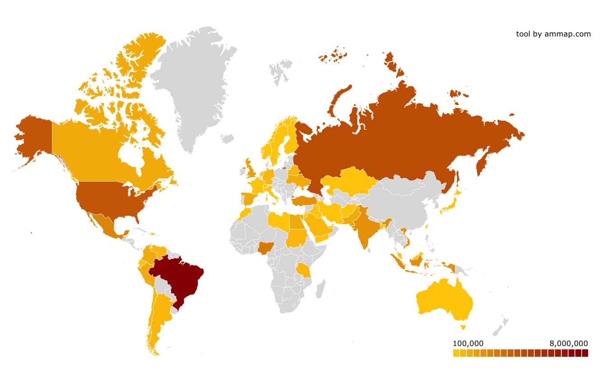
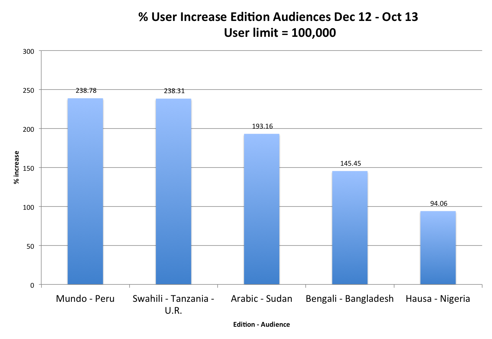
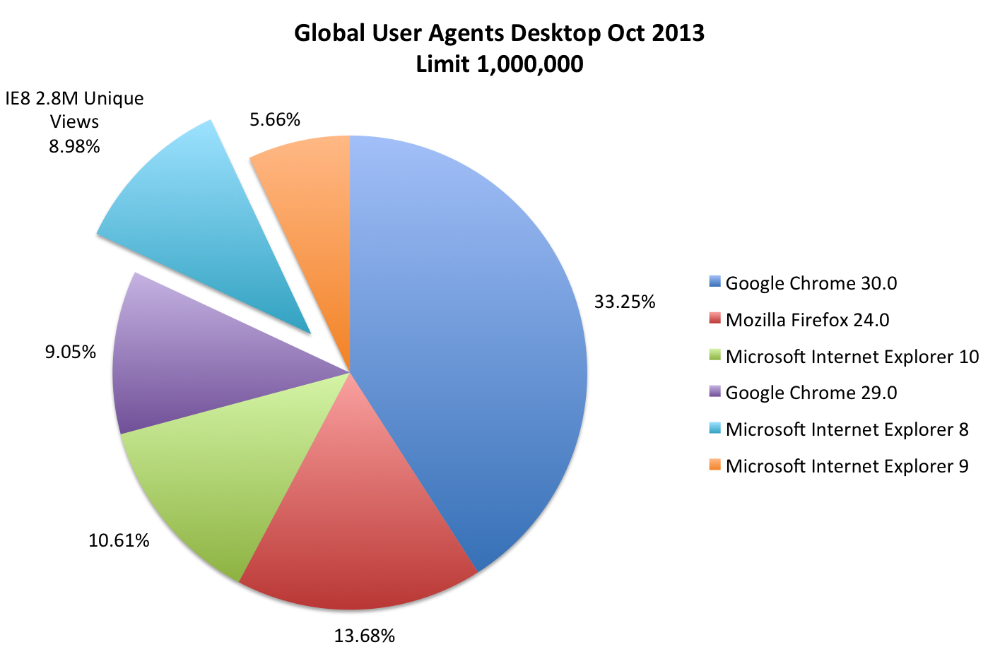
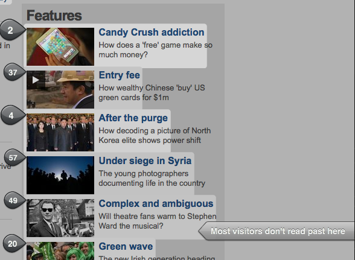
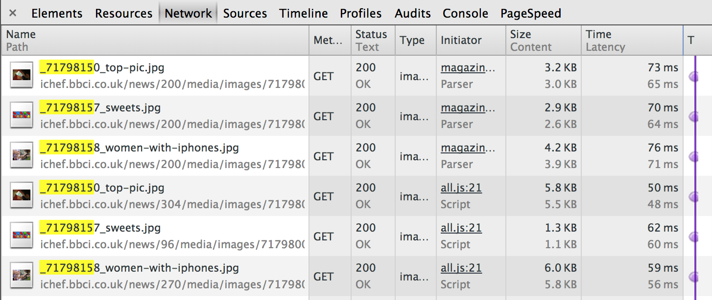

Performance Hack!
Welcome.
Who?
- News developers, Domestic, World Service
- Audience
Group 1 - High rollers - Good devices and connections
Group 2 - High hopers - Good devices, bad connections
Group 3 - Underdogs - Bad devices, bad connections
What?
- Beyond Varnish...
- Reduce page load time / weight
Requests
Asset sizes
Caching / localStorage
etc
When?
- Past 3 weeks
- Today and Tomorrow
- For March
Where?
- From the plantations of Peru
- To the platform at Sevenoaks
Why?
- It's a numbers game
- We need to beat The Guardian
How?
- Analyse our audience
- Analyse our product
- Fix the problems we find
- ...or at least try and sell the fixes to Product.
Where are they?
What's cookin?
Peru up nearly 250% this year
How's that working out?
20/11/13 from netindex.com| Country | Connection Speed |
|---|---|
| Peru | 3.64 |
| Tanzania | 3.97 |
| Sudan | 1.67 |
| Bangladesh | 2.59 |
| Nigeria | 24.28 |
| UK | 23.12 |
Peru suffers from s***e internet connections
Ok, so... Browsers
Explorer 8
(yes really!)
Sass comes in very handy...
Chris Eppstein
Co-Creator of SASS
http://bit.ly/sassiefix@media screen and (min-width: 500px) {
↓
@include respond-to(500px) {
core.scss → core.css
compact.scss → compact.css
tablet.scss → tablet.css
wide.scss → wide.css
old-ie.scss → old-ie.css
wide.css
@import '../../partials/base/_wide';old-ie.css
$media-queries: false;
$media-query-free-breakpoint: 900px;
@import '../../partials/base/_wide';
Modern browsers get...
@media screen and (min-width:320px) {
.header {
background: blue;
}
}
@media screen and (min-width:900px) {
.header {
background: red;
}
}
Old IE gets...
.header {
background: red;
}
wide.css
@import '../../partials/base/_wide';old-ie.css
$media-queries: false;
$media-query-free-breakpoint: 900px;
@import '../../partials/base/_wide';
Timing!
How can I help?
modules/timing/timing.js
var perf = window.performance
|| window.msPerformance
|| window.webkitPerformance
|| window.mozPerformance;
...
if (this.getPageLoadTime() > 3000) {
return 'slow';
} else {
return 'fast';
}
Perhaps reduce image quality?
function doImageEnhance () {
if (timingGroup === 'slow') {
//reduce image quality by 25% for slow connections
return new ImageEnhancer('',0.75);
} else {
return new ImageEnhancer();
}
}
spot the difference?
saves us around 15% on image weight
CSS Marriage
Currently, the stylesheets ARE the media queries
- core.css - 108KB (16KB)
- compact.css - 68KB (12KB)
- tablet.css - 89KB (15KB)
- wide.css - 88KB (15KB)
Can they be combined?
...and let media queries do the work
- core.css - 108KB (16KB)
- postload.css - ???KB* * insert gzip magic here
Lazyloading
Load 2 screen heights
only 15% of users read past there
if (lazyLoad == 'true') {
// images outside top two screens add class 'no-replace-lazy'
var cutoff = ($(window).height() * 2) + $(window).scrollTop() ;
$(".js-delayed-image-load").each(function() {
if ($(this).offset().top > cutoff) {
$(this).addClass('no-replace-lazy');
}
});
window.addEventListener('scroll', debouncedHandleScroll, false);
}
Yeah, so the new imager.js does this already, w'evs
Boom!

39 image requests down to 16!
75kb saved!
Metrics Tool
Code quality: Hack
bbcServices: [
"news",
"hindi",
"arabic"
],
screenSizes: [
"320x480",
"768x576",
"1008x768"
],
assetGroups: {
frameworks: "/frameworks/" /* ORB, Identity, etc */
},
externalSites: [
"http://www.theguardian.com?view=mobile",
"http://mobile.nytimes.com/"
]

What about content pages?
Multiple image requests on story pages 
/news/1.24.0-556/js/vendor/jquery-2/jquery.min.js
/news/1.24.0-556/js/compiled/all.js
2 requests
jquery.js + all.js
1 request less and 10-12K smaller